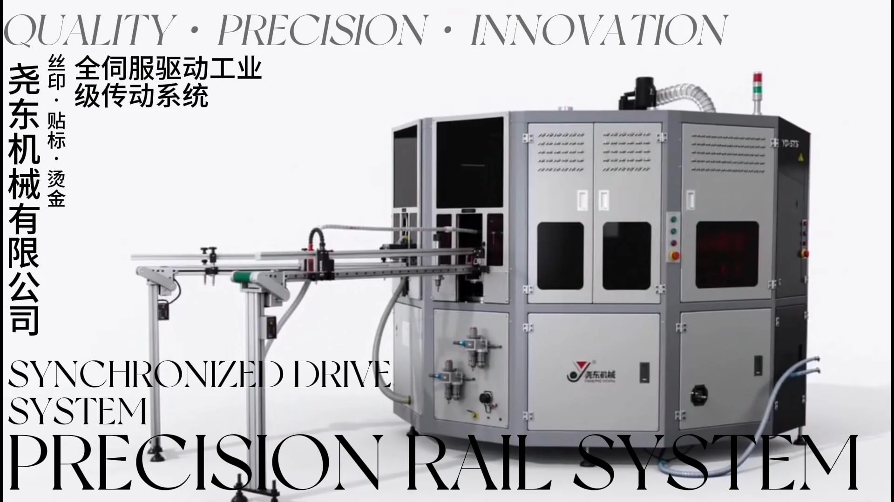

FILE 02 / DIGITAL TWIN · IN PROGRESS
尧东机械
让机器在屏幕里转起来。
大三小组课题：把一套机械设备的展示搬进 UE5，做成可以走、可以拆、可以看的数字孪生展馆。
← 返回作品档案
FIG. 00 / REAL MACHINE YD-STS-412全伺服转盘式丝印贴标烫金机 · 真机影像四大展厅模块
01 / EXHIBITION MODULES
展馆按参观动线拆成四个展厅，每个展厅对应一种"理解机器"的方式：看外形、看结构、看原理、看数据。
整机零件沿轴线展开，鼠标悬停高亮部件并弹出名称与工艺说明。
外壳材质切换为半透明，内部传动链实时可见，配合剖面动画讲解装配关系。
设备在典型工况下运行：参数面板联动转速、扭矩等关键数据，观察运动逻辑。
第一/第三人称走进展馆，靠近设备自动触发讲解，支持交互式切换包材与配置。
相机蓝图架构
02 / BP_CAMERA_MANAGER · MY PART
我负责的相机管理系统：一台 BP_CameraManager 管全部机位，1–4 号键直切四个展厅，滚轮/按键在展厅内做子机位切换。切换带缓动插值，保证漫游不断片；每台相机独立挂 PostProcess，切换展厅时灯光氛围随之过渡。
我的分工
03 / RESPONSIBILITY
KEY-PRESS CAMERA SWITCH · 2026 春季学期
相机系统 + 设备巡检交互
除相机蓝图外，同时负责设备巡检交互：点击设备进入巡检模式，逐项核对巡检点并在面板记录状态。团队 16 周课题，目前处于方案落地阶段，展厅截图完成后会替换到本页。
进行中 · 真机影像已归档 · 展厅截图待补